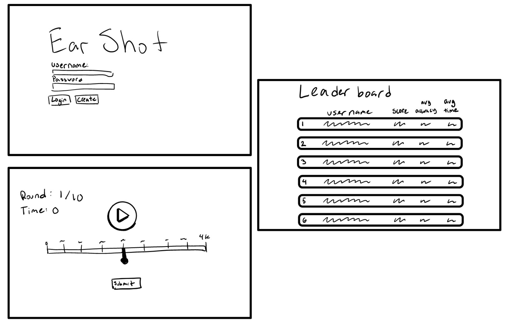

Welcome back, Guest!
Now Playing
[Placeholder: Application Data]
Ear training tip: the human ear can typically detect frequencies from 20 Hz to 20,000 Hz.
Round in Progress
Tone 1 of 10
Submit Your Guess
Round score, accuracy, and response time will be calculated and displayed here once all 10 tones are guessed.
Frequency Reference
[Placeholder: Third-Party API]
This panel will eventually pull note-to-frequency data from an external audio reference API so players can cross-check standard pitches while training. See MDN's Web Audio API docs for the browser-side tone generation this feature will build on.
- A4 — 440 Hz
- E2 — 82.41 Hz
- C6 — 1046.5 Hz
Design Sketch
